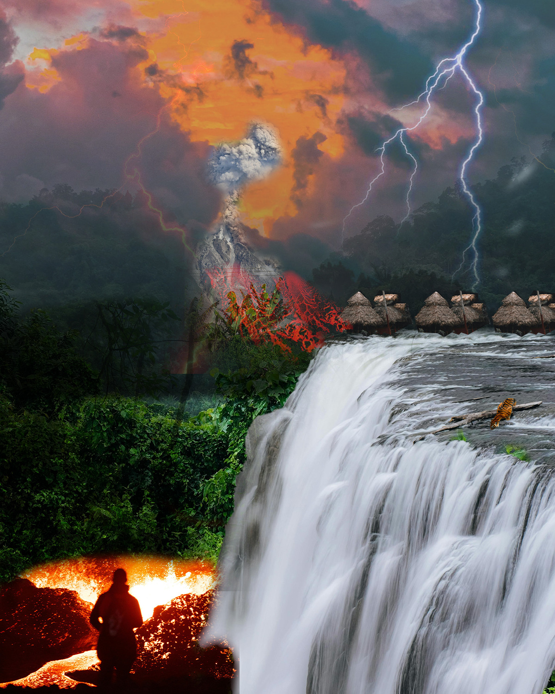
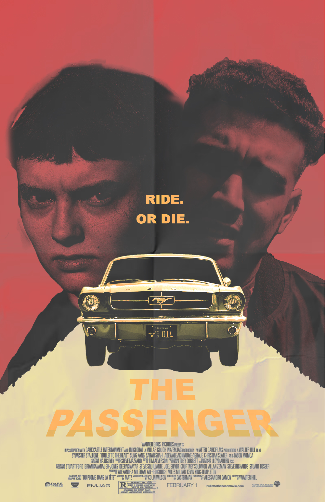

These are the projects I created in the DIG2000 class. I learned so many things on how to create Photoshop images, Premiere Pro videos, and a website with HTML
This is my Photoshop image I created with layers.

This is the Photoshop image I created mirroring the instructions.

I did not complete my Stop motion assignment but heres an old skateboarding montage I created 13 years ago using only an Ipod.
I have not finished with my Video Project due to a death in my family but I should be completed 7/26 or 7/27. I did not want to leave a blank space where a video should be, so here is a Fortnite Edit I made 4 or 5 years ago. I created the intro and outro along with adding sounds and music to the clips.